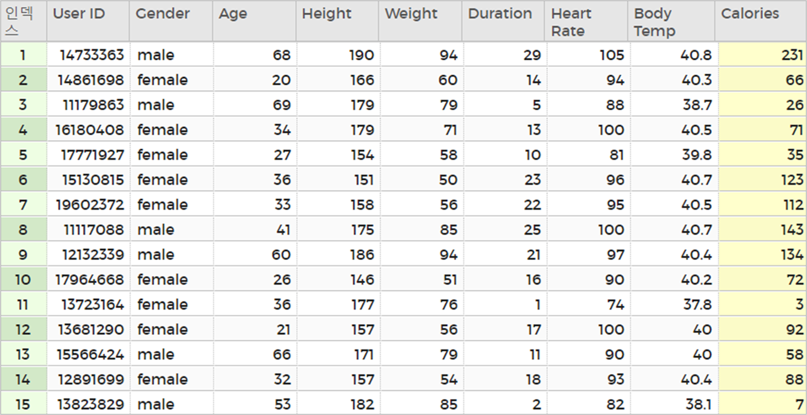
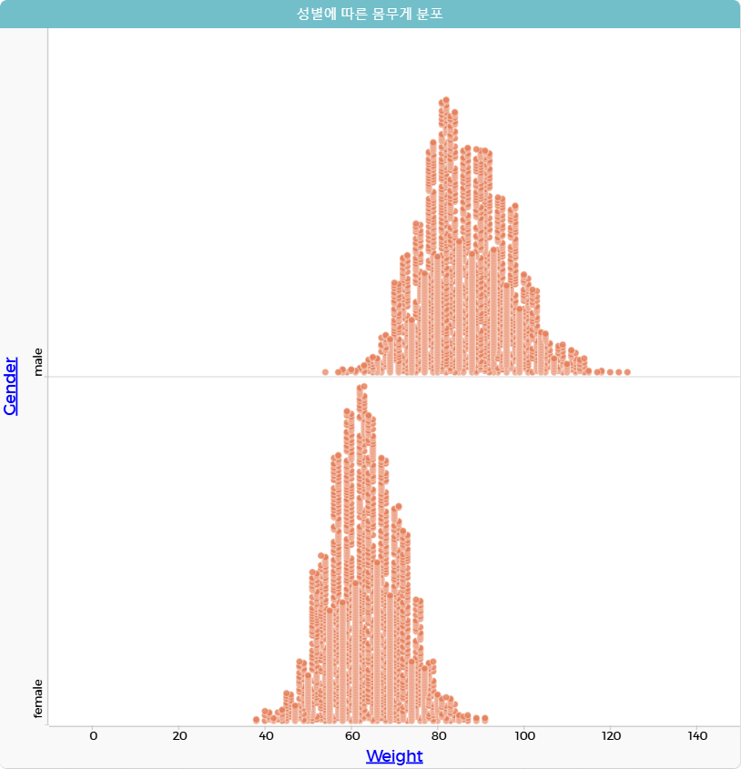

칼로리 데이터와 운동 데이터의 시각화(분포도)
분포도는 수치형 변수를 구간으로 나누어 각 구간에 속하는 데이터의 분포를 시각화하기 좋은 도구이다. 코답을 사용하여 분포도로 시각화하는 방법을 알아보자.
1. 문제 상황 이해하기
칼로리와 운동 데이터에 있는 속성 중 남녀 성별에 따른 몸무게의 분포를 분석하려고 한다. 원활한 분석을 위해 데이터를 시각화해 보자.
2. 데이터 수집하기
빅데이터 전처리 과정을 통해 정리한 칼로리-운동 데이터를 사용한다.

3. 데이터 탐색하기
- ①팝업창의 새 문서 버튼을 클릭한다.
-
②
오른쪽 상단의 실습 파일 보기 버튼(
 )을 클릭하여
calories_exercise.csv의 주소를 복사(
)을 클릭하여
calories_exercise.csv의 주소를 복사(  )한다.
)한다.
-
③
메뉴(
 )의 ‘가져오기’에서 URL 탭을 선택하여 복사한 주소를 붙여 넣은 뒤 데이터 가져오기 버튼을 클릭한다.
)의 ‘가져오기’에서 URL 탭을 선택하여 복사한 주소를 붙여 넣은 뒤 데이터 가져오기 버튼을 클릭한다.
4. 데이터 시각화하기
-
①
그래프 아이콘(
 )을 클릭하여 새로운 그래프를 생성한다.
)을 클릭하여 새로운 그래프를 생성한다.
- ②임의의 그래프가 생기면 그래프 이름을 더블 클릭하여 'cases'에서 ‘성별에 따른 몸무게 분포’로 변경한다.
- ③그래프의 x축 속성을 클릭하여 Weight 속성을 선택한다.
- ④그래프의 y축 속성을 클릭하여 Gender 속성을 선택한다.
5. 결과 해석하기
분포도를 보고 그래프의 결과를 해석해 보자.

시각화한 결과를 보면, 남녀 모두 정규분포를 이루고 있음 한눈에 알 수 있다.
그리고 여성의 몸무게 분포도가 남성의 몸무게 분포도보다 조금 더 중앙에 모여 있는 것으로 보아
여성의 몸무게가 남성의 몸무게보다 표준편차가 작다는 사실도 파악할 수 있다.
Tip!
- 정규분포(Normal Distribution): 분포 곡선이 평균값을 중앙으로 하여 좌우 대칭으로 종 모양을 이루는 분포이다.
- 표준편차(Standard Deviation): 데이터의 분포가 평균을 중심으로 얼마나 퍼져 있는지를 나타내는 통계적 지표이다. 표준편차가 작을수록 데이터가 평균에 가까이 모여 있고, 표준편차가 클수록 데이터가 평균에서 멀리 퍼져 있음을 의미한다.